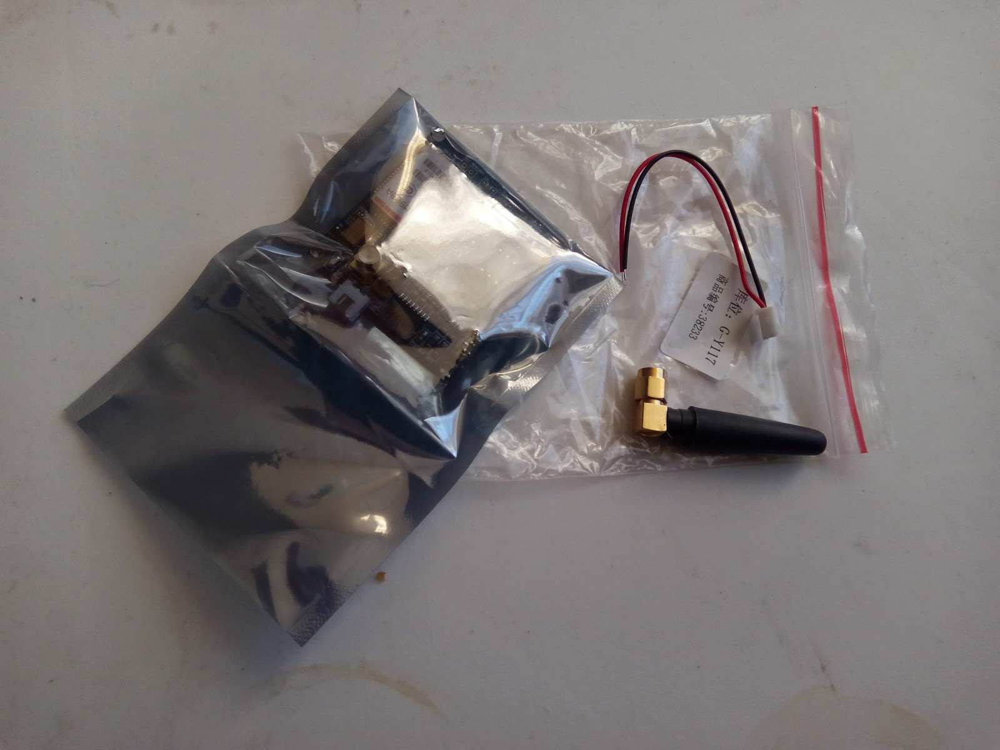
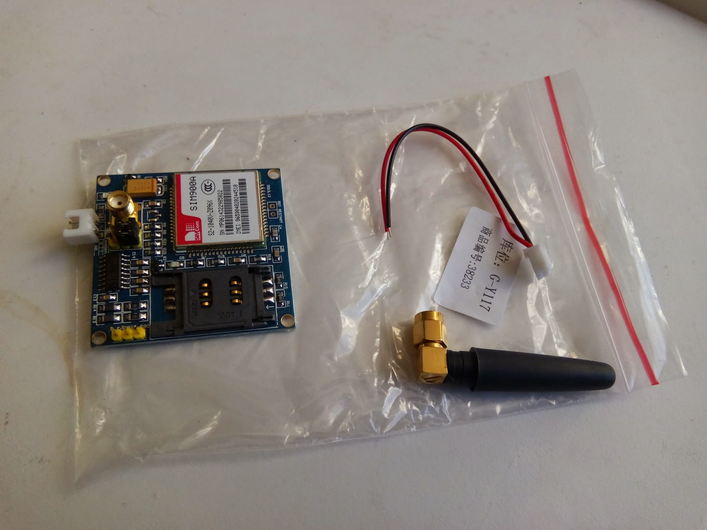

Підключення MSP430 до SIM900A
UART-монітор — спостереження за передачею даних по UART
Замовив я розпаяний SIM900A на платі SIM900A Mini v3.4, не розібравшись до кінця в чому відмінність модифікації SIM900A від SIM900. Основна відмінність — SIM900A працює в dual-band діапазоні, а SIM900 — в quad-band. Здавалося б, для України dual-band повинен підходити ідеально. Але ні.
SIM900A має регіональне блокування.
Ось список країн, у яких можна використовувати SIM900A:
| Країна | Підтримувані коди операторів (MCC) |
|---|---|
| Китай | 460 |
| Індія | 404 / 405 |
| Сінгапур | 525 |
| Малайзія | 502 |
| Таїланд | 520 |
| Індонезія | 510 |
| Камбоджа | 456 |
| В’єтнам | 452 |
| Лаос | 457 |
| М’янма (Бірма) | 414 |
| Бруней | 528 |
| Філіппіни | 515 |
| Східний Тимор | 514 |
Прийшла мені така залізяка:


Довго грався з підключенням, і коли в результаті вийшло відправляти AT команди, виявилося дивне: девайс бачить мережі (пошук мережі “AT+COPS=?” працює), бачить сімку та оператора сімки. Але не реєструється в мережі:
AT+CREG?
+CREG: 1,0
OK
AT+CPIN?
+CPIN: PH-NET PIN
OK
Після гугління з’ясувалося, що виділена відповідь означає, що девайс залочений.
Тому уникайте покупки чіпів SIM900A, без букви А — краще.
Цей матеріал було перенесено зі старого блогу antigluk.blogspot.com.